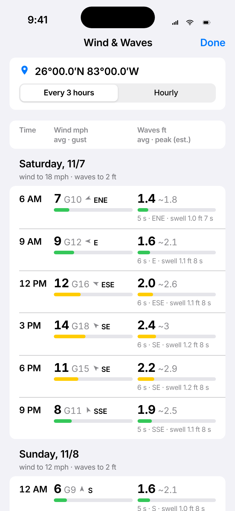
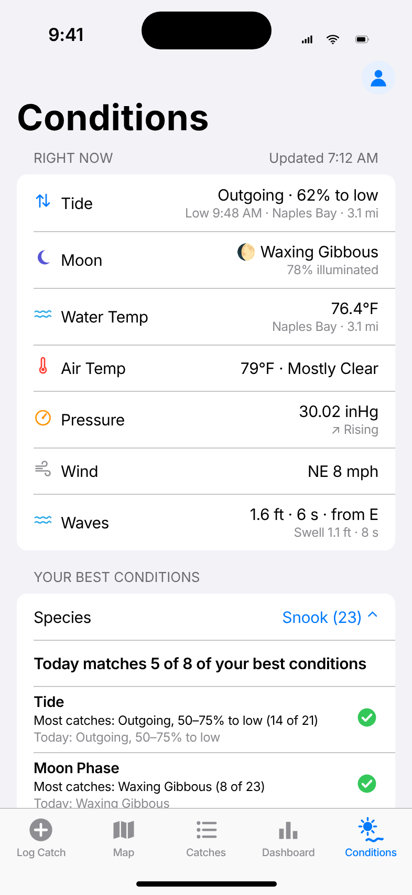
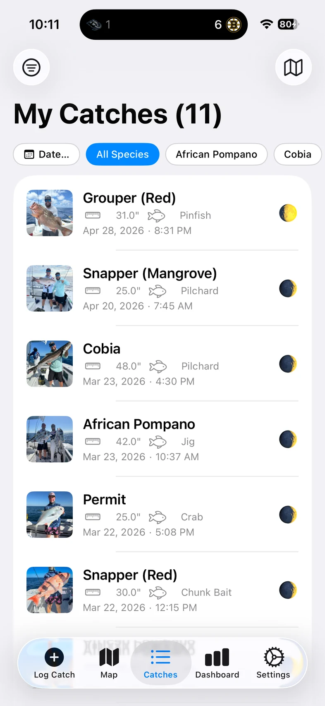
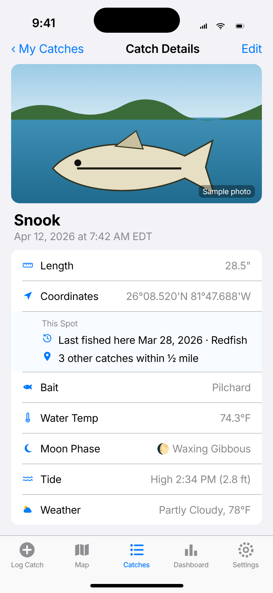
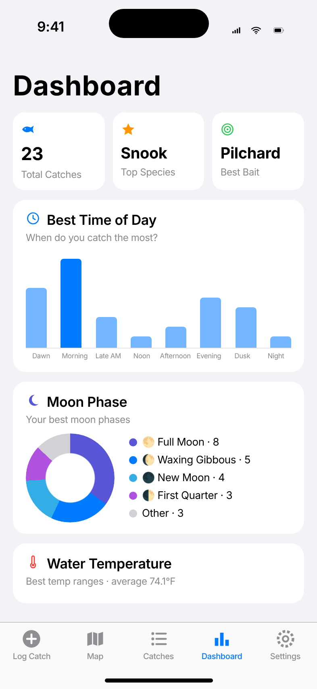

Catch Book
Your fishing log, tides, and spots—remembered.
New in 1.3 Wind & wave forecast, built in iPhone · iOS 17 or later
iPhone · iOS 17 or later


Wind & wave forecast, built in
Press and hold any spot on the water on the Map—or tap Forecast on a saved catch—for a 7-day wind and wave forecast for that spot, every 3 hours or hourly.
- Wind: average and gusts in mph, and the direction
- Waves: average height in feet with an estimated peak, wave period, and swell
- Big, bold numbers and color bars you can read on a sunny deck
Forecast apps alone can cost $95+ a year.
Catch Book Pro includes the forecast, your private catch log analytics, and GPX export for $19.99/year (or $1.99/month). New subscribers try Pro free for 7 days.
See Free vs ProWaves on every catch Free
Each catch now saves the wave height, period, and direction (and the swell) for the hour you caught it—even for older photos, back to late 2021. Most inland lakes and rivers simply show “Not available.”
Waves in Your Best Conditions Pro
Waves join tide, moon, temperature, pressure, and wind as a Best Conditions factor (0–1, 1–2, 2–3, 3–5, 5+ ft), and the Dashboard gets a Wave Height chart.
Forecast and wave data from Open-Meteo.com (CC BY 4.0). Computer-model forecast for the nearest open water; the peak is an estimate (about 1 wave in 10). Not for navigation.
Know when to go
Open the Conditions tab before you head out. See what the water is doing right now, and how today stacks up against the days you caught the most fish.
Right Now Free
- Tide at your nearest NOAA station: incoming or outgoing, and how far to the next high or low
- Moon phase and illumination
- Air and water temperature
- Barometric pressure and whether it’s rising or falling
- Wind speed and direction
- Waves: height, period, direction, and swell (new in 1.3). Pull down to refresh
Your Best Conditions Pro
- For each condition, the range that produced most of your catches, like “Outgoing, 40–80% to low”
- A check or × for today’s value, and a summary: “Today matches 5 of 8 of your best conditions”
- Filter by species, because the best snook day isn’t always the best redfish day
Built from your own catch log, on your iPhone. A pattern appears once at least 5 catches recorded that condition. Free users see Your Best Conditions blurred until they upgrade.

Everything about the bite, saved with every fish
Tap Log Catch on the boat or the beach. Catch Book fills in the details you'd never write down, so next season you know exactly where, when, and how they were biting.
Conditions logged automatically
Every catch records its GPS position (with Navionics-style coordinates you can copy) plus the conditions at that moment—or at the time and place on a photo you add.
- Air temperature, wind, sky, and barometric pressure from Apple Weather
- Tide state at the catch time (incoming or outgoing, percent to high or low) and water temperature from the nearest NOAA station on any U.S. coast
- Waves at the catch time: height, period, direction, and swell from Open-Meteo (new in 1.3)
- Moon phase and illumination, calculated on your iPhone
- Species, length, weight, Kept or Released, bait, photo, and notes. Everything stays editable
Your catches on a map
See every catch as a pin, colored by species. Tap one to open the full details. The map follows the same filters as your list, so “March and April snook” is one tap away.
- Re-center on your location in one tap
- A radius slider from ½ to 25 miles, anchored on My Location or the Map Center
- “Near you” shows the last catch and how many are within that radius
- New in 1.3 (Pro): press and hold the water for a 7-day wind & wave forecast

Filters that think like a fisherman
Filter by month across every year (every April you've ever fished), by this year, the last 30 days, or a custom range. Combine with one or more species.
- See what’s applied at a glance, and reset with one tap
- “Show on Map” puts the same catches on the map

“Last fished here”
Open any catch to see the most recent other catch at the same spot (within about half a mile). Widen the radius up to 25 miles to see “Last fished within…” and how many fish you’ve caught around that area. Find out whether a spot keeps producing or was a one-time thing.

A dashboard of what works
Your numbers, not guesswork: total catches, top species, best bait, best time of day, best month, moon phase, tide, pressure, wave height, weight by species, Kept vs Released, sky conditions, water-temperature ranges, and your top spots. Free users see every card’s title; Catch Book Pro unlocks the data.

The My Catches list is a real iPhone screenshot. The other screens, including Conditions and the wind & wave forecast, are illustrative mockups with sample data and made-up coordinates.
Your spots stay yours
No account, no sign-up, no ads, no tracking. We never see your catches or your spots.
On your iPhone
Your log lives on your device. There’s no Catch Book server and nothing to sign in to.
Private iCloud backup
Automatic backups go to your own iCloud Drive, with photos and dated history. Restore on a new phone in one tap.
No account needed
Your Apple Account handles backups and your subscription. Nothing else to remember.
Try it free. Upgrade when it’s earned its place.
Log unlimited catches free. Catch Book Pro adds the 7-day wind & wave forecast, Dashboard insights, today-vs-your-best conditions, and GPX export. New subscribers can try Pro free for 7 days.
Free
Unlimited logging, auto conditions (now with waves), current conditions, map, filters, list, and iCloud backup. Dashboard titles stay visible; the data is blurred until Pro.
Pro Monthly
The 7-day wind & wave forecast for any spot, Dashboard insights, today vs. your best conditions, and GPX export (one catch or your whole log). Starts with a 7-day free trial for new subscribers. Cancel anytime.
Pro Yearly
The 7-day wind & wave forecast, Dashboard insights, today vs. your best conditions, and GPX export. Starts with a 7-day free trial for new subscribers. Save about 16% compared with monthly.
U.S. prices; other countries are priced by the App Store in local currency. The 7-day free trial is for new subscribers; unless you cancel at least 24 hours before it ends, it becomes a paid subscription at the plan’s price. Subscriptions renew automatically until cancelled in your Apple Account settings. If you stop subscribing, everything you’ve logged stays available to view, edit, filter, map, back up, and restore; Dashboard insights, the wind & wave forecast, and GPX export require Pro again. See the Terms.
Questions
Where can I get Catch Book?
Catch Book is available now on the App Store for iPhone (iOS 17 or later). Download it here.
Do I need an account?
No. There’s no sign-up. Backups use your own iCloud Drive and the subscription uses your Apple Account.
Can anyone else see my spots?
No. Your catches are stored on your iPhone and, if you use iCloud, in your private iCloud Drive. We don’t run a server and never receive your catches or locations. Read the Privacy Policy.
Does it work offline, out on the water?
Yes. You can log a catch with GPS anywhere. Weather, pressure, tide, and water temperature fill in when you have a connection, and you can always type them in yourself.
Where do tides and water temperature come from?
From the nearest NOAA station to the catch (U.S. coasts, Great Lakes, and territories, within about 100 miles). The app shows the station name and the tide state at the catch time. Weather and pressure come from Apple Weather and work anywhere. Waves and the wind & wave forecast come from Open-Meteo’s models (coastal and offshore waters; most inland lakes and rivers have no wave data).
Does Catch Book have a marine forecast?
Yes, new in version 1.3 with Catch Book Pro. On the Map, press and hold any spot on the water (or open a saved catch and tap Forecast) to see a 7-day forecast every 3 hours or hourly: wind average and gusts in mph with direction, wave height with an estimated peak, wave period, and swell. Forecast apps alone can cost $95+ a year; Catch Book Pro includes it with the Dashboard insights and GPX export for $19.99/year or $1.99/month. The data comes from Open-Meteo’s weather and marine models. It’s a model forecast, not a buoy reading, and not for navigation.
What’s free, and what does Pro unlock?
Logging catches is free and unlimited, along with the map, filters, auto conditions (including waves at the catch time), and iCloud backup. Catch Book Pro unlocks the 7-day wind & wave forecast, the Dashboard insights (card titles stay visible for free, with the data blurred), the comparison of today’s conditions with your best catches on the Conditions tab, and GPX export for Garmin, Navionics, and other chart apps.
Is there a free trial?
Yes. If you’re new to Catch Book Pro, both the monthly and yearly plans start with a 7-day free trial. The app shows the trial and the price before you start. Cancel at least 24 hours before the trial ends (iPhone Settings > your name > Subscriptions) and you won’t be charged; otherwise the plan you picked starts when the trial ends. One free trial per Apple Account.
What happens if I cancel Pro?
You keep everything you’ve logged. You can still view, edit, filter, map, back up, and restore all your catches. Dashboard insights, the wind & wave forecast, and GPX export go back behind Pro.
Can I log an old catch from a photo?
Yes. Add a photo and Catch Book asks whether to use the photo’s time and location. If you say yes, it fills in historical weather, tide, water temperature, waves, and moon for that time and place. A short tour on first launch shows how.
Is there an iPad or Android version?
Catch Book is made for iPhone. It isn’t available for Android.
More help on the Support page.